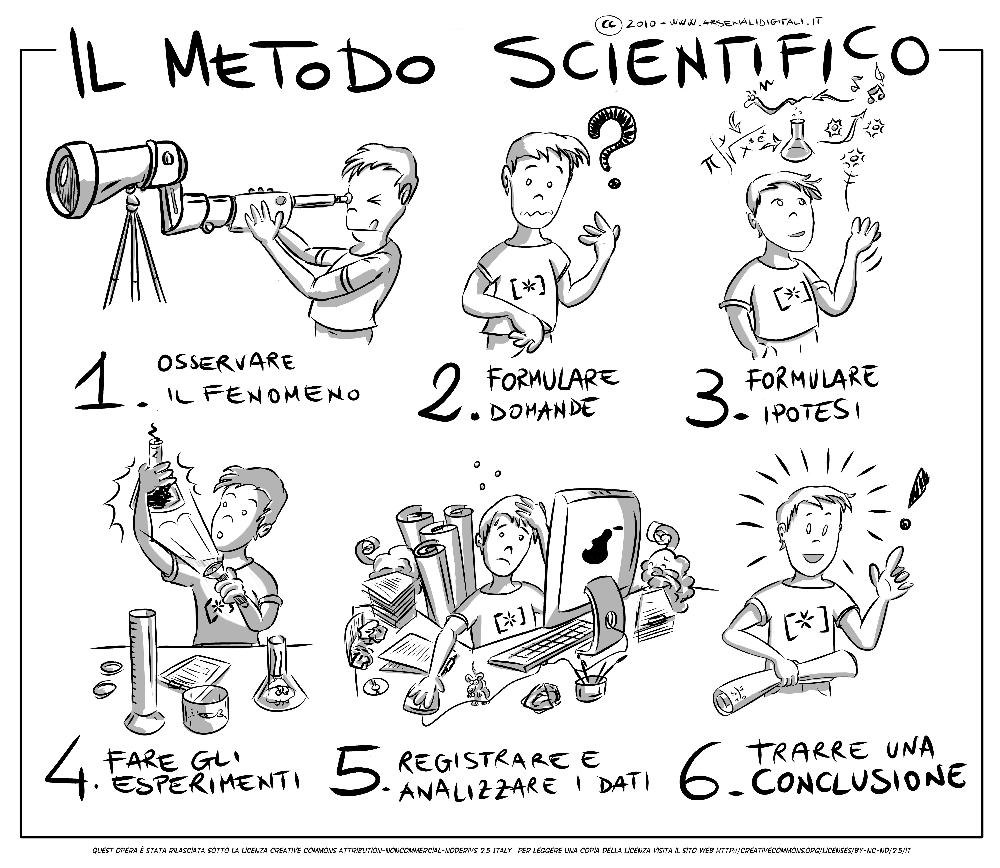
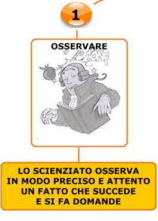
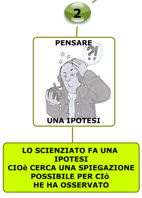
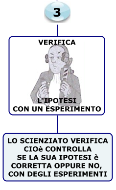
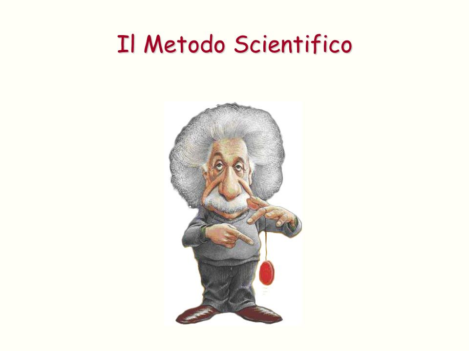
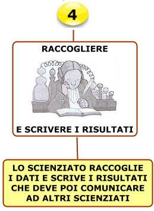
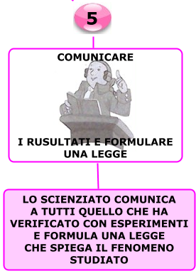
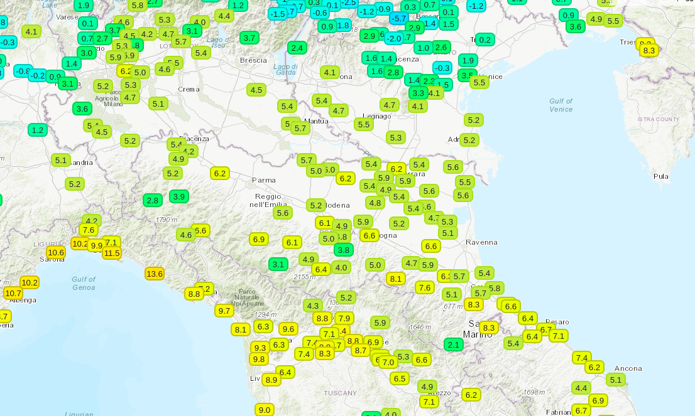

Il metodo scientifico¶
Cos’è e come funziona la comunità scientifica¶
La scienza: un grande puzzle globale
Immagina un enorme puzzle, con milioni di pezzi sparsi in tutto il mondo. Ogni pezzo rappresenta una scoperta, un esperimento, un'idea. Mettere insieme questo puzzle è il lavoro degli scienziati, un gruppo di persone unite dalla passione per la conoscenza e dalla curiosità verso il mondo che ci circonda.
La comunità scientifica è una rete globale di ricercatori che cooperano per ampliare le nostre conoscenze sul mondo. Questa comunità è estremamente diversificata, con esperti provenienti da ogni angolo del globo e da molteplici discipline: dal biologo marino che studia gli ecosistemi corallini al fisico delle particelle che indaga i misteri dell'universo. Gli scienziati condividono un metodo comune: quello scientifico, un approccio rigoroso che prevede la formulazione di ipotesi, la progettazione di esperimenti e l'analisi dei risultati. Gli scienziati inoltre credono al valore universale della conoscenza.
E’ facile capire che la scienza si esprima come un coro più che come una voce unitaria, anzi possano insorgere discussioni interne e diatribe scientifiche.
Un pilastro fondamentale della ricerca scientifica è la pubblicazione dei risultati su apposite riviste scientifiche. Attraverso un rigoroso processo di peer review, ovvero una valutazione critica da parte di altri esperti del settore, gli articoli vengono selezionati e pubblicati. Ogni scoperta deve essere sottoposta al vaglio della comunità scientifica, che può adottarla o confutarla. Questo sistema di controllo garantisce l'affidabilità delle conoscenze scientifiche e stimola la ricerca di nuove prove.
Lungi dal limitarsi a sommarie conclusioni, questi lavori presentano nel dettaglio metodi utilizzati, esperimenti condotti, risultati ottenuti sotto forma di grafici o immagini.
La pubblicazione riporta i nomi degli autori e suggella la paternità delle scoperte: in alcuni Paesi molti finanziamenti dipendono dal numero e dalla qualità delle pubblicazioni.
Queste infatti non sono tutte uguali, ma si differenziano per la portata e il rigore metodologico, deducibili in genere dalla rivista su cui sono pubblicate. Infatti i lavori da pubblicare sono scelti da una commissione composta da diversi ricercatori indipendenti, autorevoli nel loro campo, che leggono il lavoro candidato e ne danno un giudizio critico. Più la rivista è di alto livello più sarà accurata la selezione (e viceversa). Difficilmente sarà smentita una scoperta pubblicata da riviste internazionali e multidisciplinari come Nature e Science. Mentre annunci sensazionalistici non supportati da alcuna prova non sono notizie scientifiche e non saranno mai pubblicati. L’aspetto più bello è che queste riviste sono oggi disponibili in Internet e quindi è possibile per qualunque ricercatore informarsi ogni giorno sui progressi compiuti magari dall’altra parte del mondo!
Gli scienziati si riuniscono regolarmente in conferenze e seminari per discutere i loro lavori e stabilire nuove collaborazioni. Questi eventi, che possono variare da piccoli workshop a grandi conferenze internazionali, offrono ai ricercatori l'opportunità di presentare le loro ricerche e di confrontarsi con i colleghi.
Anche se solitamente i singoli laboratori e le istituzioni di ricerca sono strutture gerarchiche, il confronto tra diversi gruppi avviene alla pari, con i dati sperimentali come uniche “armi”o obiettivo comune. E praticamente in tutti i centri di ricerca sono frequenti i seminari, con ospiti esterni chiamati a raccontare le loro scoperte e discuterne. Naturalmente gli scienziati sono persone normali, capaci come chiunque altro di meschinità ed errori. Ma non sarebbe bello imitarne più spesso la capacità di discutere all’interno di un territorio comune?
Perché è importante conoscere il lavoro degli scienziati?
La scienza ci aiuta a comprendere il mondo che ci circonda, a trovare soluzioni ai problemi che affliggono l'umanità e a migliorare la nostra vita. Seguendo le ricerche degli scienziati, possiamo restare aggiornati sulle ultime scoperte e partecipare al dibattito su temi importanti come il cambiamento climatico, le malattie e le nuove tecnologie.
Cosa puoi fare tu?
Anche tu puoi contribuire a diffondere la cultura scientifica. Puoi leggere articoli divulgativi, seguire i canali social dei ricercatori, partecipare a eventi scientifici e condividere le tue conoscenze con gli altri.
Filosofia della scienza¶
La Filosofia della scienza ha per oggetto la conoscenza scientifica, di cui analizza gli scopi e i fondamenti concettuali. Essa affronta temi come la natura, l'uso e la funzione delle leggi e delle teorie scientifiche, la struttura della spiegazione, della previsione e delle inferenze volte all'acquisizione di conoscenza scientifica.
Il compito della filosofia della scienza¶
Identificare le caratteristiche che rendono la scienza una forma di conoscenza “vera”, contrapposta ad altre forme di conoscenza condizionate da opinioni soggettive, illusioni, miti, credenze religiose, ecc.
Gli elementi fondanti della scienza moderna occidentale
Il metodo sperimentale
Il ragionamento logico-matematico
La conoscenza scientifica, a differenza di altre forme di conoscenza, consiste in asserzioni “vere” perché dimostrate attraverso una catena di deduzioni logiche a partire da osservazioni empiriche
La conoscenza del contesto storico e filosofico dà quel tipo di indipendenza dai pregiudizi della sua generazione di cui soffre la maggior parte degli scienziati. Questa indipendenza creata dall'intuizione filosofica è, a mio avviso, il segno di distinzione tra un semplice artigiano o specialista e un vero ricercatore della verità.
In primo luogo, la filosofia offre un chiarimento concettuale. I chiarimenti concettuali non solo migliorano la precisione e l'utilità dei termini scientifici, ma portano anche a nuove indagini sperimentali, perché la scelta di un determinato quadro concettuale vincola fortemente il modo in cui gli esperimenti vengono concepiti.
Oltre al suo ruolo di chiarificazione concettuale, la filosofia può contribuire alla critica dei presupposti scientifici e può persino essere proattiva nella formulazione di teorie nuove, testabili e predittive che aiutano a definire nuovi percorsi per la ricerca empirica.
La filosofia e la scienza condividono gli strumenti della logica, dell'analisi concettuale e dell'argomentazione rigorosa. Tuttavia, i filosofi possono utilizzare questi strumenti con gradi di accuratezza, libertà e astrazione teorica che i ricercatori praticanti spesso non possono permettersi nelle loro attività quotidiane. I filosofi con le conoscenze scientifiche necessarie possono quindi contribuire in modo significativo al progresso della scienza a tutti i livelli dell'impresa scientifica, dalla teoria all'esperimento, come dimostrano gli esempi sopra riportati.
In sintesi, la filosofia della scienza non solo analizza come funziona la scienza, ma si interroga anche sul suo significato più profondo e sul suo ruolo nella nostra comprensione del mondo. È un ponte tra la scienza e le grandi domande filosofiche sulla conoscenza, la realtà e l'etica.
Il metodo scientifico sperimentale¶
Il metodo scientifico: osservazione¶
La prima fase del metodo sperimentale è quella dell'osservazione. Osservare non vuol dire semplicemente vedere, bensì significa "vedere ponendosi delle domande, dei quesiti", e quindi interrogandosi sulla natura e sul motivo del verificarsi di determinati fenomeni piuttosto che di altri. La curiosità di fronte al fenomeno è la molla e l'incipit che scatena nello scienziato il desiderio di conoscere e di scoprire cose nuove.
Il metodo scientifico: ipotesi¶
La seconda fase è l'ipotesi. Si tratta di una prima spiegazione di come si svolge un determinato fenomeno (non incorruttibile e certa). Tale ipotesi deve essere necessariamente verificata affinché possa diventare una legge.
Il metodo scientifico: verifica¶
La terza fase è la verifica, cioè occorre che l'ipotesi sia sostenuta da esperimenti eseguiti in laboratorio con adeguati strumenti, in modo tale che assuma una veridicità scientifica ufficialmente riconosciuta.
Il metodo scientifico: la legge fisica¶
{kind=link}
Infine, la quarta fase è quella che porta alla formulazione della legge fisica, ovvero il momento in cui un'ipotesi viene confermata dagli esperimenti e quindi quell'ipotesi può diventare una legge fisica o scientifica.
Comunicare¶
E la meteorologia?¶
Non è sempre possibile riprodurre e «controllare» sperimentalmente osservazioni naturali, per esempio quando abbiamo a che fare con spazi e tempi non riproducibili.
La Meteorologia opera con processi non replicabili (se non in piccola parte) in laboratori, caratterizzati da variabilità naturali semplificabili ma non riproducibili esattamente.
Consiste nello studio di una «combinazione» di processi solo in parte interpretabili con scienze sperimentali (chimica, fisica) e utilizza anche strumenti quali la statistica e la modellistica.
Cos’è e come funziona la comunità scientifica¶
Multiforme e variegata
Ma capacità di collaborare
Su spazi fisici e tematici estesissimi
Adesione a un metodo di lavoro, che è la sperimentazione, e sul valore universale della conoscenza
Il più importante mezzo di comunicazione sono le riviste scientifiche
Lungi dal limitarsi a sommarie conclusioni, questi lavori presentano nel dettaglio metodi utilizzati, esperimenti condotti, risultati ottenuti
L’intera comunità può giudicare l’attendibilità e il valore della scoperta e ripetere gli stessi esperimenti, per approfondire ulteriormente la ricerca o eventualmente smentirla
La pubblicazione riporta i nomi degli autori, e suggella la paternità delle scoperte
I lavori da pubblicare sono scelti da una commissione composta da diversi ricercatori indipendenti, autorevoli nel loro campo, che leggono il lavoro candidato e ne danno un giudizio critico
Più la rivista è di alto livello più sarà accurata la selezione
Queste riviste sono oggi disponibili in Internet, e quindi è possibile per qualunque ricercatore informarsi ogni giorno sui progressi compiuti
vi sono poi raduni e convegni, che possono avere portata locale o internazionale, e in genere sono di settore
Anche se solitamente i singoli laboratori e le istituzioni di ricerca sono strutture gerarchiche, il confronto tra diversi gruppi avviene alla pari, con i dati sperimentali come uniche “armi”o obiettivo comune
Naturalmente gli scienziati sono persone normali, capaci come chiunque altro di meschinità ed errori
Pubblicazione scientifica¶
Nell'editoria accademica una pubblicazione scientifica è uno scritto redatto in modo oggettivo, ovvero evidenziando in maniera trasparente e verificabile metodo e risultati di ricerca, da parte di scienziati o tecnici, su un argomento scientifico e pubblicato poi, attraverso i canali di comunicazione della comunità scientifica, tipicamente su riviste accademiche, una volta validata secondo le regole della revisione paritaria, entrando di diritto a far parte della letteratura scientifica.
{kind=link}
Convegni e seminari¶
Vi sono poi raduni e convegni, che possono avere portata locale o internazionale, e in genere sono di settore Anche se solitamente i singoli laboratori e le istituzioni di ricerca sono strutture gerarchiche, il confronto tra diversi gruppi avviene alla pari, con i dati sperimentali come uniche “armi”o obiettivo comune Naturalmente gli scienziati sono persone normali, capaci come chiunque altro di meschinità ed errori
ResearchGate¶
E' un social network gratuito[1] dedicato a tutte le discipline scientifiche. Da maggio 2008, ResearchGate ha ora oltre 15 milioni membri attivi provenienti da 192 paesi.
Ecco come funziona:
Condividi le tue pubblicazioni, accedi a milioni di altre e pubblica i tuoi dati.
Collegatevi e collaborate con colleghi, coautori e specialisti.
Ottenete statistiche e scoprite chi ha letto e citato il vostro lavoro.
Fate domande, ottenete risposte e risolvete problemi di ricerca.
Trovate il lavoro giusto utilizzando la nostra job board dedicata alla ricerca.
Condividete gli aggiornamenti sul vostro progetto in corso e tenetevi al passo con le ultime ricerche.
Divulgazione scientifica¶
L'obiettivo è far conoscere al pubblico, in modo corretto ma efficacemente riassunto e comunicato, i risultati delle ricerche e delle pubblicazioni scientifiche. Questa attività non presenta in genere specifiche intenzioni formative al singolo individuo, ma è rivolta alla collettività, con scopo di accrescere la percezione dell'importanza della scienza in una società.
nella divulgazione scientifica si è affermata anche l'impostazione di origine anglosassone delle esperienze bidirezionali, in cui si cerca il feedback da parte del pubblico, discutendo in luoghi come laboratori, caffè scientifici, forum partecipati.
La scienza, la tecnologia e l’innovazione giocano un ruolo crescente nelle nostre vite.
Come cittadini, siamo chiamati a valutare decisioni anche tecniche, come per esempio la politica dei trasporti, le scelte energetiche, leggi che riguardano la salute, la ricerca, e in generale scelte che riguardano noi e i nostri discendenti. Queste decisioni comportano anche un certo grado di coscienza scientifica. Coscienza, e non semplicemente conoscenza, perché non si possono limitare le scelte politiche e culturali a una sola valutazione tecnica, né, d’altra parte, a una valutazione emotiva.
Le attività di associazionismo è talvolta impegnata nella divulgazione scientifica e la alimenta.
MeteoNetwork¶
MeteoNetwork è un'associazione ONLUS nata per sostenere e coordinare lo sviluppo della meteorologia amatoriale di qualità in Italia, della diffusione e dell’approfondimento della meteorologia e della climatologia.
Uno degli obiettivi primari dell’Associazione è quello di contribuire, anche attraverso il coinvolgimento di altri siti meteo italiani ed esteri, alla crescita dell’interesse comune verso la meteorologia nel nostro Paese, visti il poco spazio e lo scarso interesse (e spesso deformato) riservatole dai mezzi istituzionali di informazione.
Vanta importanti collaborazioni con molti Enti del settore pubblici e privati, e può contare su uno dei forum di meteorologia più letti d’Italia (oltre 9500 iscritti e 5.000.000 discussioni, dati aggiornati a Aprile 2019) e su una rete di stazioni meteorologiche tra le più ramificate della penisola e parte dell'Europa grazie alla collaborazione con Associazioni estere
Meteonetwork: dati in tempo reale
